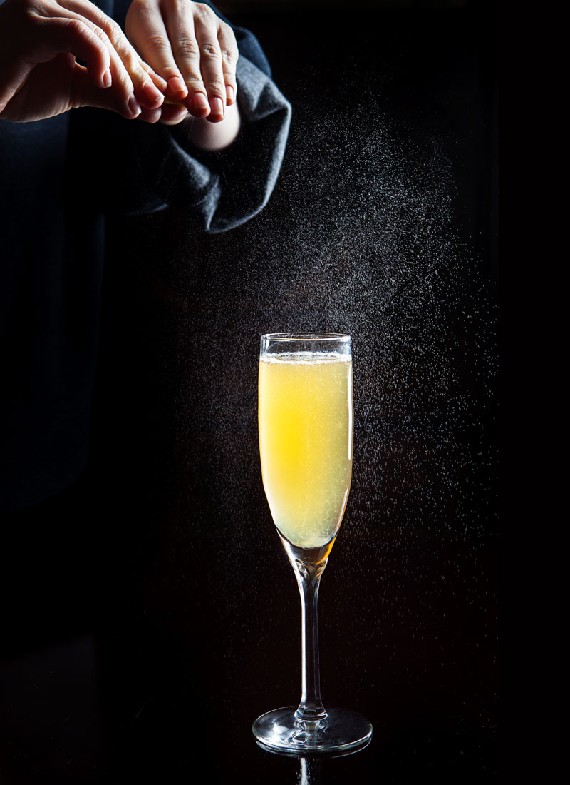

French 75

Description
A French 75 is a bright, effervescent cocktail comprised of lemon juice, sugar syrup, gin (or cognac), and sparkling wine. It is shaken, served in a coupe, and garnished with an expressed lemon peel
Ingredients
- 1/2 oz. Lemon Juice
- 1/2 oz. Sugar Syrup(1:1)
- 1 1/2 oz. Gin or Cognac
- 2 oz. Cold Champagne
Steps
- Add all Ingredients except Champagne to a shaking tin
- Fill tin a little more than halfway with 1 inch ice cubes
- Shake tin in a circular motion for ~8 seconds, or until you hear the ice beginning to chip and shatter
- Double strain into a coupe or a flute
- Top glass off with Champagne
- Garnish with an expressed and trimmed peel of lemon
- Serve